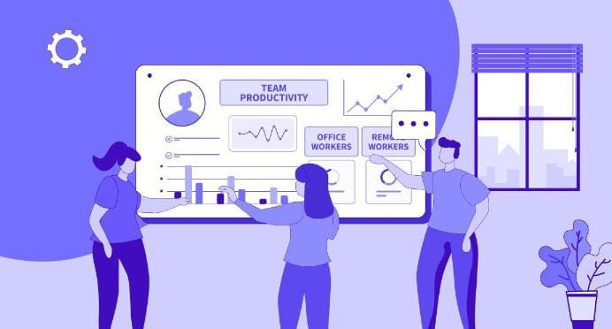

Automatically log updates, track active contributions, and map the complete evolution of your brainstorming workspace.
The Board Activity module serves as the primary audit and event management system for the Virtual Sticky Note Brainstorming Platform. It tracks and documents operations executed across canvas environments, securing structural transparency. Every update—ranging from text edits on a single note to macro workspace deletions—is monitored automatically.
By consolidating telemetry into a unified system log, the module eliminates manual update checks. Users can effortlessly look back to determine how an interactive ideation board developed from an empty layout into a fully mapped production system, establishing operational continuity for remote and hybrid project setups.
To register every digital canvas change with precise context flags, creating sequential version records.
To clearly verify ownership of actions, tracking which teammate adjusted or relocated specific workflow modules.
To establish comprehensive audit trails that help verify details if team members accidentally overwrite project items.
Without a persistent activity engine, scaling multi-user digital brainstorming quickly causes operational disconnects. Teammates risk accidentally overwriting each other's research or missing crucial timeline edits when operating asynchronously across varied shifts.
The Board Activity engine solves this issue by acting as an impartial source of truth. It tracks work patterns, boosts collaboration accountability, and safeguards project data, allowing cross-functional groups to construct complex systems confidently.

The system works behind the scenes to maintain historical integrity and monitor changes smoothly across the active workspaces:
Attaches strict identifiers including user tokens, parent board links, and exact timestamp logs to each record.
Attaches strict identifiers including user tokens, parent board links, and exact timestamp logs to each record.
Enforces data safety parameters so that only authorized workspace members can view background tracking details.
Ensures event logging stays aligned across all open browser tabs whenever multiple users update properties simultaneously.